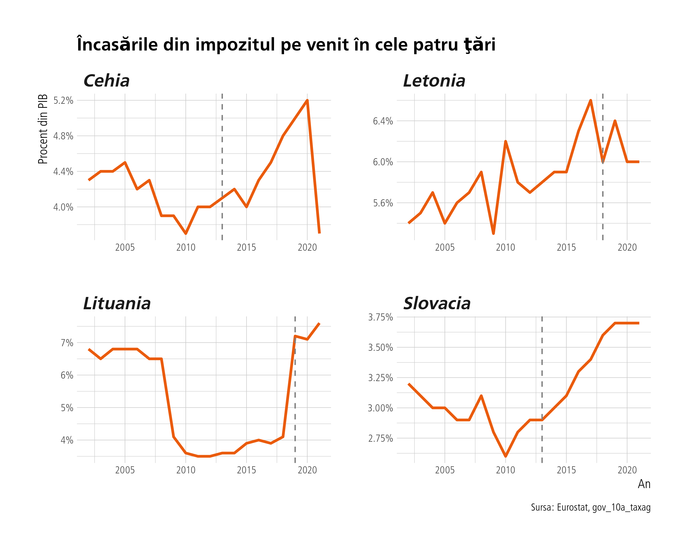
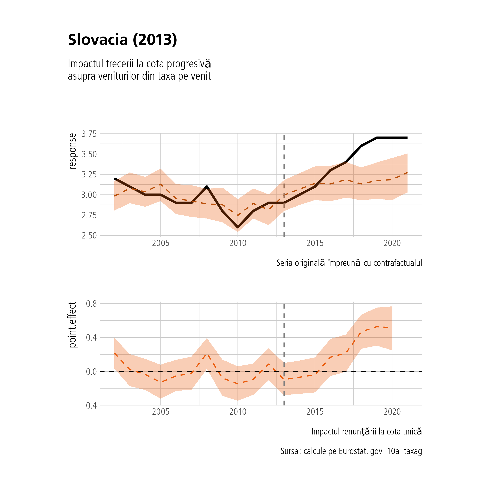
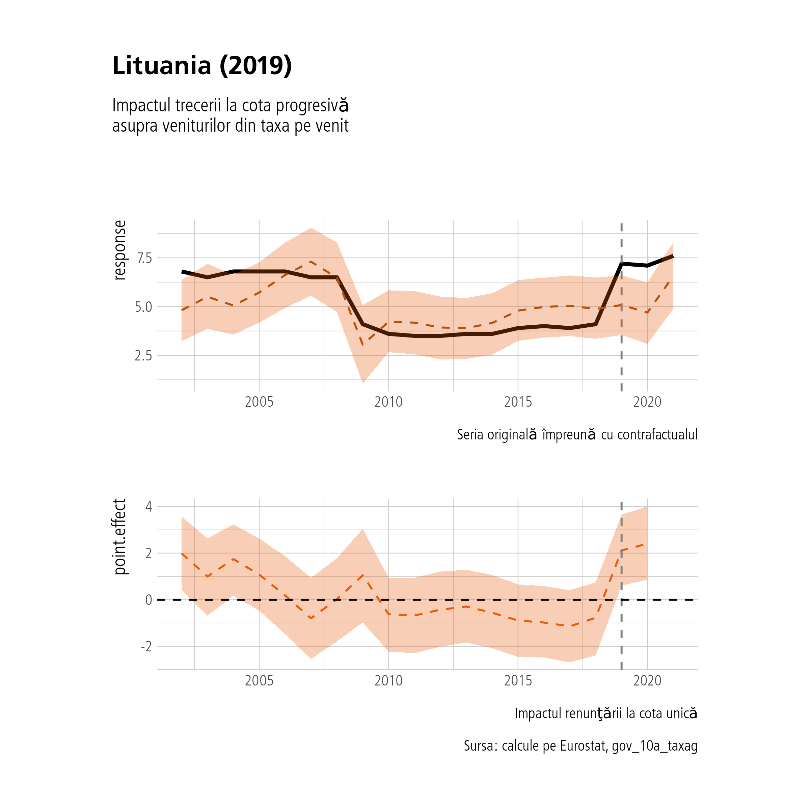
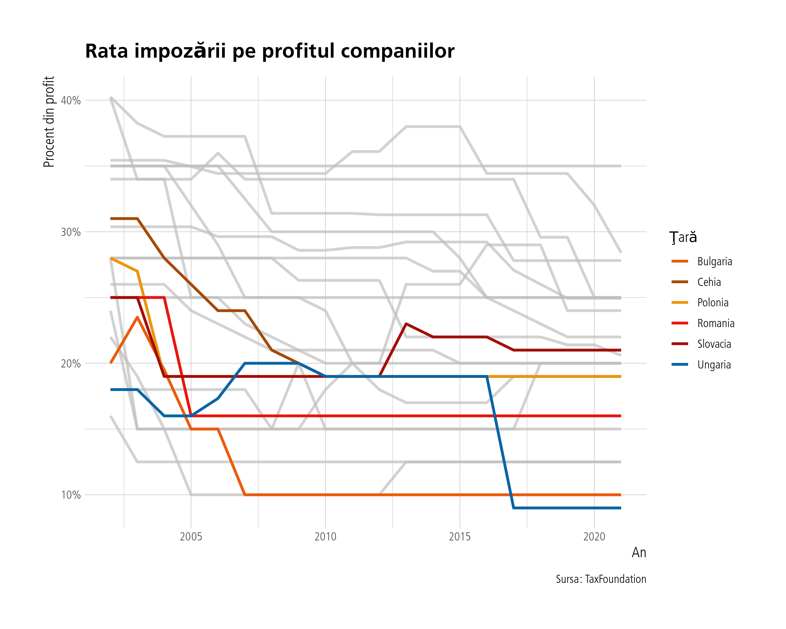
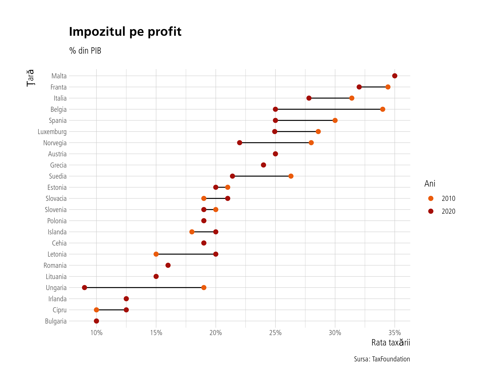

2 Analiza ratelor impozitării
2.1 Analiza exploratorie a datelor
În acest raport vom încerca să investigăm impactul cotei progresive asupra încasărilor din impozitul pe venit. În acest scop vom ilustra înainte mai multe trenduri ale taxării pentru a ne familiariza cu datele. Vom începe prin a ilustra o metrică ce ţine indirect de povara taxării pe venit, anume rata de taxare efectivă pentru persoana singură ce câştigă salariul mediu pe economie. Sursa datelor e indicată în subtitlul graficului.

Observăm din acest grafic că Belgia, Germania şi Danemarca sunt ţările cu cea mai mare rată a taxării efective, România ocupând efectiv locul al 6-lea ! Trebuie menţionat însă că metrica această calculată de Eurostat ia în calcul şi contribuţiile plătite de angajat, nu de angajator, motiv pentru care pare că România a avut o creştere semnificativă a taxării efective în 2020 (din cauza unor artificii fiscale din 2018), deşi în realitate taxarea a coborât. Lituania, spre exemplu, cunoaşte o creştere mare a taxării efective în 2020 datorită trecerii la cota progresivă în 2019.
Acum vom vizualiza relaţia încasări din impozitul pe profit vs încasări din impozitul pe venit şi vom împărţi (prin metoda *k-means*) ţările în patru clusteri. Am ales o diferenţă de 5 ani între cele două perioade afişate astfel încăt să excludem şi impactul crizei economice din 2008-2009 dar şi al pandemiei de COVID din 2020. Aşadar, în acest grafic apar anii 2014 şi 2019.

În continuare vom vizualiza cea mai mare rată a taxării marginale pentru fiecare ţară şi cum a variat în timp. Vom folosi datele de la OECD întrucât Eurostat nu are informaţii de acest gen. Dar menţionez că apar nişte discrepanţe între datele acestea şi ce mai spune Google.

Şi numărul de praguri pe care le are fiecare ţară în anul 2021.
Observăm ţări ca Luxemburg cu 19 de praguri de taxare !
2.2 Analiza statistică
Pentru început vom analiza longitudinal variaţia încasărilor din taxele pe venit folosind un model din categoria “latent growth curve” de tip bayesian. Modelul asumă intercepturi şi pante random pentru fiecare ţară în parte. Dar mai întâi o ilustraţie grafică cu datele brute.

Mai jos ilustrăm rezultatele (parametrii) modelului. Mai întâi valorile pantelor. Interpretarea este simplă, panta este valoarea medie anuală cu care cresc (sau scad) încasările din impozitul pe venit. Fiecare ţară are câte o pantă şi un intercept. Interceptul este valoarea din anul 1998, anul cu care începe analiza noastră şi pentru care avem datele. Practic este punctul de plecare al ţării respective. Modelul mai furnizează şi corelaţia dintre pante şi intercepturi. Dacă corelaţia e pozitivă, înseamnă că ţările care încasau la început mai mult au crescut în continuare şi mai repede decât media celorlalte, dacă este negativă, înseamnă că există un fenomen de convergenţă - cele care încasau puţin cresc mai mult decât cele care încasau de la început mai mult.

Şi intercepturile:

Corelaţia dintre intercepturi şi pante este de -0.08, nefiind semnificativă statistic.
2.2.1 Impactul cotei progresive asupra încasărilor
Ne vom axa pe cele patru ţări care au abandonat cota unică: Lituania în 2019, Letonia în 2018, Cehia şi Slovacia în 2013.
Pentru Lituania (2019):
- Aceasta a avut următorul parcurs: 33% cotă unică introdusă în 1995, 27% în 2006, 24% în 2008 şi 15% in 2009. În 2019 a trecut la cota progresivă cu praguri de 20 % şi 27 %.
Pentru Letonia (2018):
- Aceasta a avut următorul parcurs: cotă unică de 25% în 1997. 23 % în 2009, 26% în 2010, 25% în 2011, 24% în 2013, şi 23% in 2015. în 2018, a trecut la impozitul progresiv cu cote de 20%, 23% şi 31.4%.
Pentru Cehia (2013):
- Cehia a introdus în 2008 o cotă unică pe venit de 15 % care s-a aplicat şi contribuţiilor sociale (cam 20 % pe venitul din muncă per ansamblu). În 2013 a adaugat o cotă de 22 % pentru cei ce depăşeau limita contribuţiilor trecând practic la impozit progresiv. Deci impactul e mai mic în cazul aceasta spre deosebire de Lituania
Pentru Slovacia (2013):
- Cota unică de 19 % introdusă în 2004 şi impozit progresiv introdus în 2013 cu cote de 19 % şi 25 %.
Ne-am aştepta să vedem cele mai mari efecte la Lituania şi Slovacia.

Aparent ar exista un impact pozitiv al cotei progresive asupra încasărilor din impozitul pe venit … însă e foarte important să ne uităm în paralel şi la încasările totale… dacă acestea cresc odată cu încasările din taxa pe venit e clar că există o altă variabilă, alta decât rata taxării pe venit, care le influenţează pe amândouă, căci logic vorbind rata taxării pe venit nu ar trebui să influenţeze colectarea taxelor pe profit, pe mediu, TVA sau oricare altă taxă în afara de cea pe venit. Vom standardiza datele ca să putem să le suprapunem şi să observăm dacă au acelaşi trend.

Aparent este cazul pentru toate tările noastre. Cel puţin parţial, acolo unde a crescut încasarea din taxa pe venit au urcat şi încasările din restul taxelor. Menţionam că ce apare în grafic ca taxe “totale” sunt taxele totale minus încasările din taxa pe venit, adică încasările din restul taxelor. Ca să calculăm impactul “cauzal” al cotei progresive asupra încasărilor din taxa pe venit, putem folosi restul încasărilor ca procent din PIB ca serie de control (ajustăm la ea). Vom folosi un model dezvoltat de Kay H. Brodersen et al (2015), din categoria modelelor structurale bayesiene de serii de timp. Vom folosi încasările din restul taxelor şi creşterea procentuală a PIB ca serii de control. Altfel spus, vom prezice ce s-ar fi întâmplat în absenţa trecerii la cota progresivă şi vom sustrage astfel efectul obţinut. Ca să pretindem că efectul obţinut este cauzal trebuie să respectăm următoarele premize:
- Nu au existat alte lucruri care s-au întâmplat concomitent cu taxarea progresivă, deci nu au existat alte intervenţii omise din model.
- Seriile de control prezic variabila-răspuns (încasările din taxa pe venit) dar nu sunt influenţate la rândul lor de intervenţie. (în cazul PIB-ului s-ar putea argumenta că lucrurile nu stau aşa)
- Relaţia pe care au o seriile de control cu variabila-răspuns rămâne aceeaşi înainte şi după intervenţie.
În cazul nostru putem să ne plângem doar de lipsa unor controale mai bune, îşi de numărul limitat de observaţii, nsă în rest respectăm aproximativ premizele. Să vizualizăm impactul cotei progresive asupra încasărilor în cele patru ţări. Graficele se citesc în modul următor: primul subgrafic cu negru reprezintă încasările din taxa pe venit, seria de timp originală sau variabila-răspuns. Cu roşu punctat este seria prezisă de model (şi fit-ul ei) în absenţa intervenţiei. În al doilea subgrafic avem impactul “cauzal” iar în al treilea impactul “cauzal” cumulativ. Predicţiile furnizat de model vin şi cu intervale ‘credibile’ (în limbajul statisticii bayesiene) de 95 %.

În Slovacia avem cel mai clar o dovada a creşterii încasărilor ca urmare a cotei progresive.

În Lituania deşi avem o creştere marcată a încasărilor din impozitul pe venit fix în anul trecerii la cota progresivă, avem o creştere semnificativă şi a celorlalte încasări de taxe, deci impactul “cauzal” calculat de model rămâne mai mic.

În Letonia nu avem niciun impact decelabil.

În Cehia avem un efect întârziat cu aproximativ 3-4 ani care ar putea fi atribuit altor măsuri.
2.3 Impozitul pe profit
În această secţiune vom analiza impozitul pe profit şi impactul lui asupra încasărilor. Spre deosebire de cel pe venit, acesta se schimbă semnificativ mai frecvent şi nu avem o singură intervenţie pe care să o putem cuantifica. De asemenea avem şi număr mic de puncte pentru a putea testa ipoteze prin metoda ecuaţiilor structurale sau chiar şi pentru o banală analiză regresivă. Ne vom limita aşadar doar la analize exploratorii.

Observăm că mai toate sunt în scădere. Efectul a treizeci de ani de neoliberalism.

Acelaşi lucru se vede şi aici. În continuare urmărim trendurile dintre încasări şi rata impozitării şi creşterea PIB-ului. Din nou, vom standardiza datele ca să le putem vizualiza în axă comună.

Din acestă imagine nu trebuie să se tragă concluzia, falsă, cum că rata impozitării ar influenţa negativ creşterea PIB-ului pentru că par invers corelate din grafic. Aici avem de-a face cu dependenţa PIB-ului de PIB-ul anterior… El creşte oricum independent de variabilele noastre, dar pentru a testa relaţia rată-> PIB avem nevoie de serii de timp mult mai lungi decât avem. Pentru a nu induce în eroare încălcând norme metodologice am ales să nu includ aici o asemenea analiză.
2.4 Scenarii de impozitare progresivă
În această secţiune investigăm diferite scenarii de impozitare progresivă pentru România. Întrucât datele sunt limitate am optat pentru un calcul simplu care foloseşte distribuţia veniturilor salariale în categorii pe decile. Doar ILOSTAT furnizează aceste date pentru România la nivel de decilă, Eurostat având ceva similar pentru intervale de 20 %. În acest fel putem estima raportul cu care ar putea creşte încasările la buget din veniturile salariale prin impozitul de venit. Dar oamenii obţin venit şi prin alte mijloace decât un salariu însă acestea sunt datele cu lucrăm. Cel puţin aceste calcule ne permit estimarea unei limite superioare. Valoarea reală va fi cel mai probabil mai mică. De asemenea, asumăm că distribuţia veniturilor nu s-a schimbat semnificativ din 2019 încoace, ultimul an pentru care există datele de pe ILOSTAT.
Pentru a explora diferite scenarii de impozitare progresivă am creat următoarea aplicaţie. Singura constantă este faptul că impozitarea este constrânsă la două trepte (cred că este rezonabil pentru România), restul fiind variabile ce pot fi explorate. Jos este un grafic care explorează asemenea posibilităţi asumând pragul pentru cea de a doua cotă la nivelul câştigului salarial brut de 2200 EURO (top 8-9 % conform distribuţiei veniturilor salariale din baza de date a World Inequality Database. Pragul a fost împrumutat de la Slovacia: pragul la ei este de 38000 EURO brut anual. Ajustat la PIB-ul per capita, la noi ar veni 2200 EURO brut lunar.
[1] "p67p100" "p68p100" "p69p100" "p91p92" Însă nu propunem şi cotele Slovaciei, ci ceva mai modest: 16 % ( în loc de 19 %) şi 21 % (în loc de 25 %). Impozitul pe venitul din salarii a fost de circa 28 de miliarde de RON în 2021 conform MF. Asumând impozitul pe venit slovac pe veniturile din salarii s-ar cumula circa 20 de miliarde de RON la buget. Pentru anul 2021. Nu mai ajustăm în jos această sumă deoarece colectările vor fi cu siguranţă semnificativ mai mari în 2023.
2.4.1 Calcul alternativ folosind datele WID
Vom calcula sumele colectate ca impozit pe venit folosind distribuţiile la nivel de percentilă ale datelor furnizate de World Inequality Database. Datele WID sunt furnizate până la anul 2021, deci avem avantajul dublu al unei distribuţii mai recente şi mai fine.
[1] 1.785863Obţinem un surplus de 78.6 % foarte similar cu cel calculat pe datele de la ILOSTAT, care dă doar 71.8 %. Vom rămâne însă pe scenariul calculat pe datele ILOSTAT pentru că ne oferă o concluzie mai conservatoare.